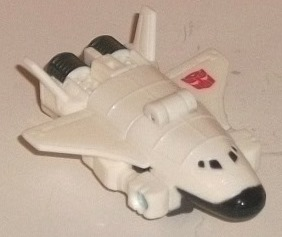
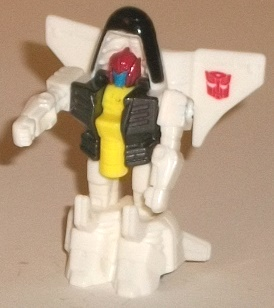
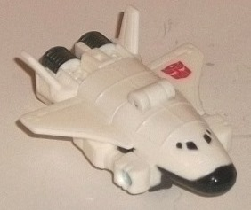
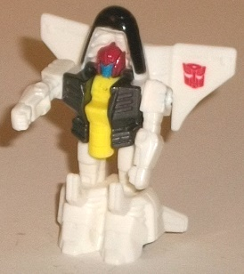
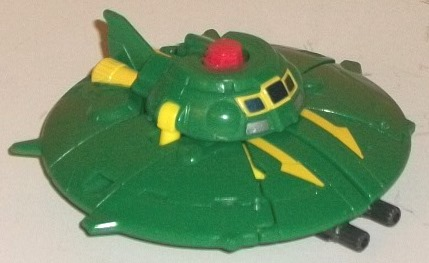
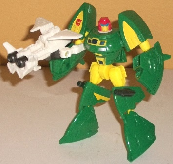

 
Difficulty of Transformations : Very Easy
Color Scheme : White, dark metallic gunmetal gray, and some black, dark blue, yellow, and dark red
Individual Rating : 5.5
Allegiances
: Autobot
Size
: Legends 2-pack
 Payload
Payload


Difficulty of Transformations
: Very
Easy
Color Scheme
: White, dark metallic
gunmetal gray, and some black, dark blue, yellow, and dark red
Individual Rating
: 5.5
Payload's alternate mode
is a tiny little space shuttle (talk about size discrepancies, here...).
This mode is a bit of a "chibi" shuttle in terms of its proportions due
to transformation and budgeting purposes, and as such isn't as long as
it needs to be. The main wings are also undersized. There's some rather
obvious robot extras-- namely, the robot arms that poke out in front of
and under the main wings. If you look at Payload from a straight-on side
view, you can also see his robot kneecaps, but this is relatively minor.
On the plus side, he has the basic mold detailing you'd expect for a shuttle,
with large panels molded in and some astonishingly fine details on the
nosecone. The windows and front of the nosecone are black and his rear
thrusters a nice gunmetal gray, but by and large this mode is almost completely
white. It's certainly realistic, but it doesn't make Payload catch the
eye much here.
Payload's weapon mode
(see Cosmos' robot pic below) involves folding up his wings, rotating his
arms forward, and flipping out a 5mm peg so he can be held by his buddy
Cosmos or any other 5mm peg-compatible TF. This mode's strongest part is
definitely the front-- the shuttle boosters make for a convincing dual-blaster.
The folded-back main wings also flank the gun mode rather effectively.
However, the robot arms are even more obvious in this mode than in vehicle
mode, and they poke back enough where they can get in the way of smaller
TFs holding him without their arms being completely straight, which is
a bit of a bummer. I prefer to keep Payload's arms folded in their vehicle
mode position in this mode to help alleviate this issue.
The robot mode for Payload
is literally his weapon mode standing up and with the 5mm peg folded down
into his chest. This is the most solid of this little guy's 3 modes. The
vehicle mode bits-- such as the shuttle nose right behind his head and
wings behind his back-- help make his silouhette a bit more unique and
aren't a huge deal on a toy this tiny. Payload's core robot mode is quite
well-proportioned in this mode, with some fantastic, intricate mold detailing
on his robot bits-- the headsculpt and detailing on his legs is particularly
impressive. This is also where Payload's color scheme isn't just nearly
solid white-- his chest is metallic gunmetal gray and yellow, with his
head having a red helmet with a blue face. I appreciate the extra color
here, but the yellow peg clashes slightly with the rest of the color scheme,
and a dark blue face inside a dark red helmet does look a little odd. For
articulation, Payload can simply move his arms back-and-forth at the shoulders.
I wish his legs could move at least at the hips, but I guess I can understand
why he can't move there for added stability in weapon mode.
Payload's strength definitely
lies in his robot mode, which is one of the best robot modes out of the
smaller toys in these Generations Legends 2-packs. His weapon mode is also
decent if you re-position the arms from their recommended configuration.
His shuttle mode is the weakest, having some really obvious arms, but overall
this is a pretty decent toy for such a small size, and definitely above-average
overall when compared to his other similarly-sized triplechanger Targetmaster
buddies.
 Autobot
Cosmos
Autobot
Cosmos


Difficulty of Transformation
: Medium
Color Scheme
: Moderately dark green,
yellow, and some light red, dark metallic gunmetal gray, silver, blue,
white, and dark metallic silvery blue
Individual Rating
: 9.3
Cosmos is back, and he's
now (a little) larger than his previous
Universe
2.0 version
! He's still has the admittedly ridiculous but cool alternate
mode of a flying saucer, but unlike the previous toys of him, this version
of Cosmos has a definite front and back to the saucer; there's windows
on the front side, along with yellow paint apps that resemble "half-arrows"
pointing to the front, with two gunmetal gray guns underneath the lip of
the saucer; meanwhile, on the backside he's got a "tailfin" and obvious
yellow thrusters, and a couple of slight protrusions on the sides that
angle towards the rear. All in all, I like this a bit more than the completely
circular, undifferentiated version of a flying saucer, as it gives him
a bit more detail and visual interest in this mode and some actual guns.
What's also impressive is that he has practically no robot extras-- yes,
it's kind of obvious the little red "button" in the center is the top of
his robot head, but that's sort of Cosmos' calling card at this point.
If you look at him from the bottom, the center of the saucer "breaks up"
and you can see his lower waist down there, but that's on the underside
so I don't consider that a bonafide piece of robot "kibble". His main color--
as it's always been-- is a green, a moderately dark shade of it that contrasts
excellently against his secondary color of yellow. The few paint details
that aren't yellow make for some nice contrasting accent colors-- the silver
and appropriate dark metallic silvery blue on his windows in particular
(and I love how the windows are outlined with a yellow border). His mold
detailing is a little sparse due to the sleek nature of a flying saucer,
but as I said before, he's got more detailing than you'd expect from a
flying saucer, and there's also occasional technical bits and bobs like
circular prortrusions here and there just so that he's not completely smooth.
As you'd expect, Cosmos'
transformation largely consists of unfolding sections of his saucer mode,
and it's definitely those sections that largely define his robot look,
from the triangular nature of his shoulders, knees, and feet to the saucer
windows on his chest. This does make a few pieces look a bit odd-- his
lower arms and "middle" leg pieces in particular-- but what's impressive
about this is that he doesn't really have any actual pieces of UFO kibble
hanging off of him. There's a small flap left over that has his engines
molded on it, but that folds down on his back in a completely unobtrusive
way. (It can be a bit difficult to wedge his head out of the cavity it's
in inside his chest without some fairly sturdy fingernails/leverage, though.)
Cosmos' proportions are admittedly off in a few areas such as his overly
large feet and his overly large fists that are simply molded into his lower
arms, but overall he's much more normally-proportioned than any of his
previous toys, with a chest, head, shoulders, and upper legs that are actually
pretty normally-proportioned. The additional yellow also makes this mode
look a bit more eye-catching when it comes to the color scheme and added
contrast, and red head w/ blue visor and yellow face really pops on his
excellent headsculpt. His articulation is also excellent-- he can move
at the neck, shoulders (at three points), elbows, at the middle of the
waist (though this is partially obstructed by his back panel due to the
transformation), and at the hips and knees (at two points). With his large,
wide feet, this means he get into some really great poses.
Cosmos does have a few
proportional oddities-- like his oddly huge fist details and triangular
lower legs-- but by and large, this is an excellent "larger Legends" figure
with excellent articulation, a fantastic vehicle mode, and a great color
scheme. One of my favorite of the Generations Legends 2-pack molds.
The space-oriented Cosmos & Payload set is one of my most-recommended purchases out of the Generations Legends 2-packs. Payload is a nice little partner figure (particularly in his robot mode), and Cosmos has one of the most unique alt modes out there and actually looks GOOD and fairly well-propotioned in both modes while still pulling his saucer mode off well, and is my favorite mold out of the larger figures in the "30th Anniversary" Generations 2-packs (and easily the best Cosmos toy as of this writing, 6/16). Recommended.
Reviews by Beastbot